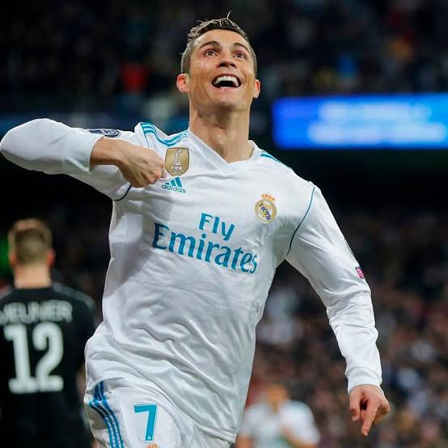
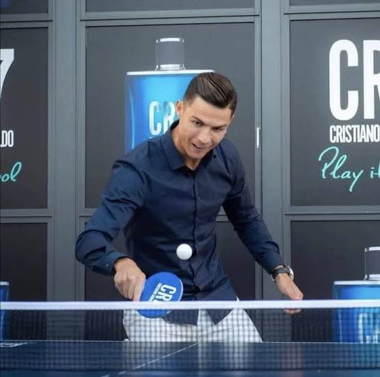

Persoonsgegevens

- Cristiano Ronaldo
- Madeira Portugal
- 1 (424) 367-2100
- cristianoronaldo@hotmail.com
Hobby's
Padel
Ronaldo speelt regelmatig padel met vrienden en heeft onder andere getraind met Arturo Coello, een van de beste padelspelers ter wereld.
Auto's
Cristiano Ronaldo heeft een indrukwekkende autocollectie met hypercars, supercars en luxe SUV's, met een totale waarde van 30 miljoen Euro.
Zwemmen
Cristiano Ronaldo gebruikt zwemmen als onderdeel van zijn fysieke training en herstel. Het past bij zijn doel om zo lang mogelijk op het hoogste niveau te blijven voetballen.
Interesses
Tafeltennis
Cristiano Ronaldo is niet alleen goed in voetbal, maar houdt ook van tafeltennis. Hij speelt het al sinds zijn jeugd en beschouwde het als een van zijn favoriete sporten naast voetbal.

Prognose
| Leerling | Problem solving | Computer systems | Fundamentals of programming |
|---|---|---|---|
| Niels Delannoy | 15/20 | 16/20 | 19/20 |
| Nicolas Roesbeke | 11/20 | 20/20 | 0/20 |
| Rube vandemoortele | 10/20 | 11/20 | 7/20 |
| Hotman el gharbi | 11/20 | 20/20 | 5/20 |